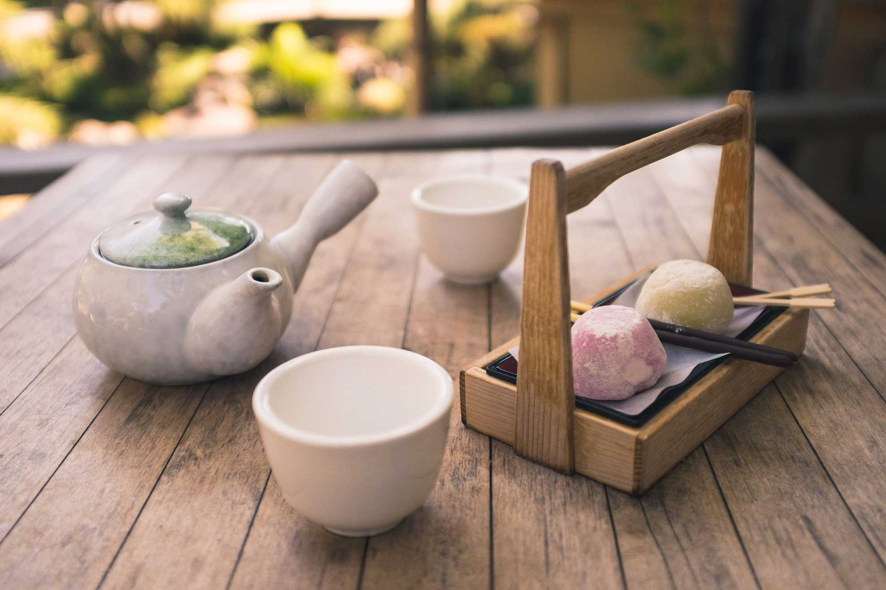
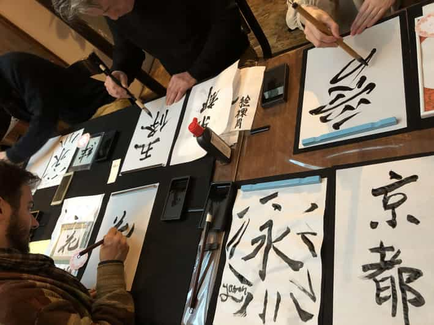
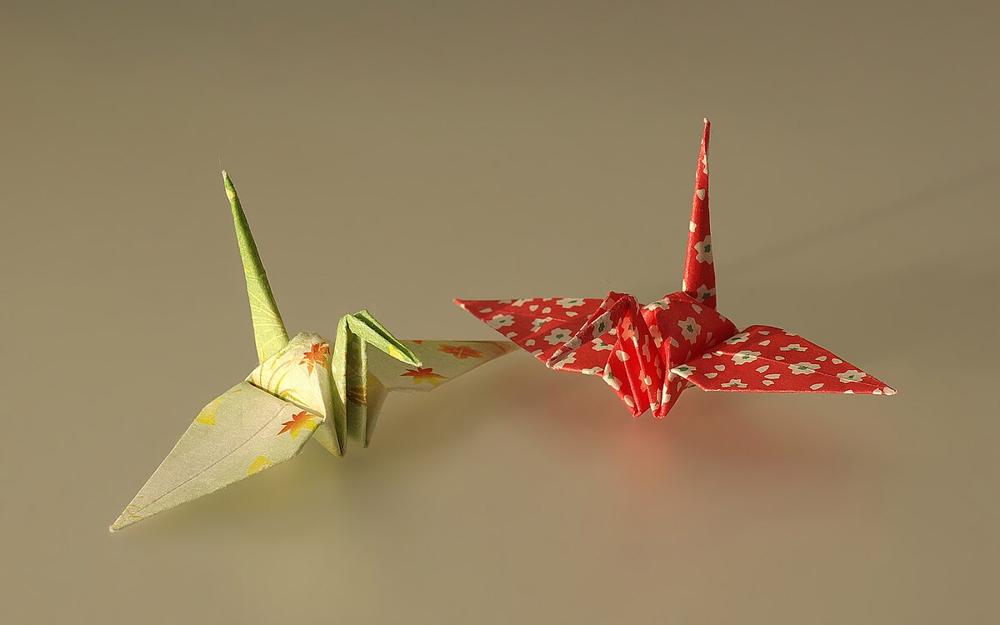
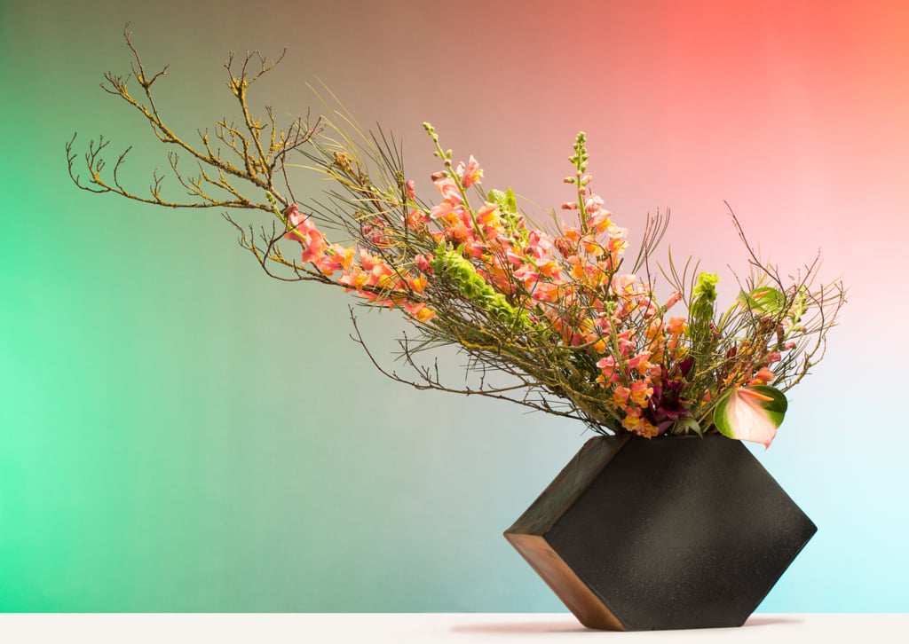

Culture in Japan
Embark on a Journey Through Japan's Timeless Traditions :
| Aspect | Description | Image |
|---|---|---|
| Tea Ceremony | The Japanese tea ceremony, or chanoyu, is an ancient tradition that emphasizes hospitality, respect, and mindfulness. It’s not just about drinking tea—it’s about creating an experience that engages all the senses. The ritualistic preparation and sharing of matcha offer a meditative pause from the chaos of daily life, reflecting the Japanese ethos of harmony and simplicity. |  |
| Calligraphy | Japanese calligraphy, known as shodo, is a refined art form that transcends mere handwriting. With every stroke, calligraphers express emotions and philosophies, turning characters into flowing works of art. It’s an art of patience and precision, where the ink’s movement on paper is seen as a reflection of the writer’s soul. |  |
| Origami | Origami, the delicate art of paper folding, is a symbol of creativity, patience, and precision in Japanese culture. With just a single sheet of paper, intricate designs come to life—from simple cranes to complex flowers and animals. Each fold represents careful thought and the mastery of technique, making origami a reflection of the beauty found in simplicity and focus. |  |
| Kimono | The kimono is a timeless symbol of Japanese culture, renowned for its intricate design and ceremonial significance. Worn during festivals, weddings, and other special occasions, the kimono’s beauty lies in its delicate fabric, elegant patterns, and cultural symbolism. Each kimono tells a story, with its colors and patterns often representing specific seasons or celebrations. |  |
| Ikebana | Ikebana is the Japanese art of flower arranging, where the placement of each stem, leaf, and blossom holds deep symbolic meaning. This practice celebrates nature’s beauty through minimalistic yet powerful compositions, emphasizing balance, harmony, and the fleeting beauty of life. It’s more than arranging flowers—it’s a form of meditation that connects one with nature’s rhythms. |  |